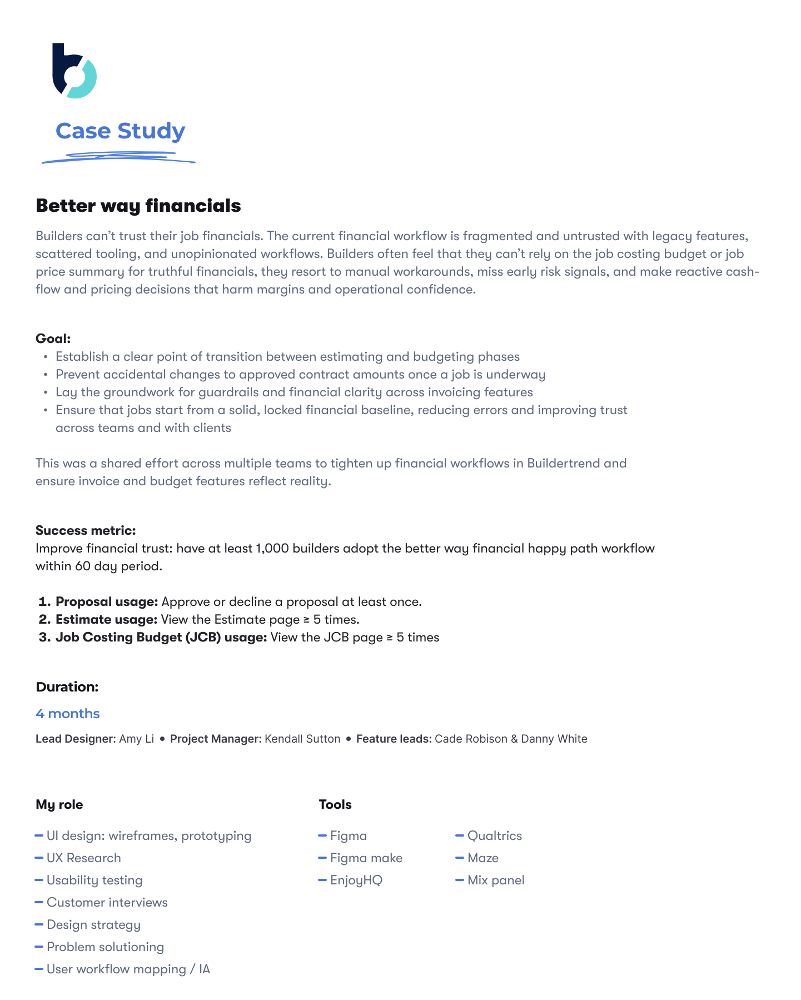

Currently at Buildertrend, designing construction financial tools used by thousands of builders to run their businesses.

I'm a product designer focused on simplifying financial and operational workflows for construction businesses. I care about designing for trust — interfaces that respect the weight of the decisions people make with them.